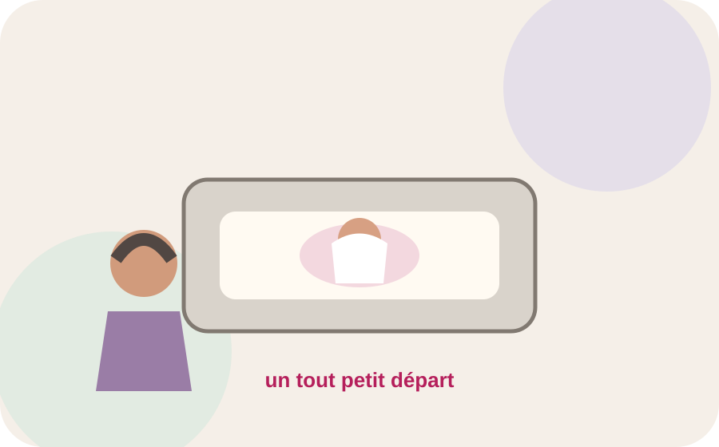
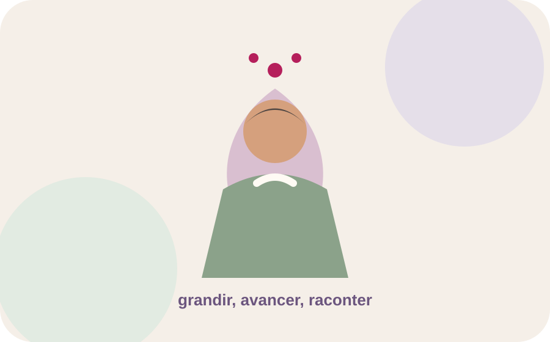

AVANT
Le tout début
Un nouveau-né en néonatologie, les premiers jours, les premiers repères et ce que la famille vivait au début du parcours.
Histoires de bébés
Des histoires de nouveau-nés et de familles, racontées avec pudeur et respect.

Des parcours à partager
La page pourra accueillir, après validation des familles, des récits anonymisés et des photos autorisées.

Un nouveau-né en néonatologie, les premiers jours, les premiers repères et ce que la famille vivait au début du parcours.

Une photo quelques années plus tard, par exemple à 3 ans, et les mots que la famille souhaite transmettre.